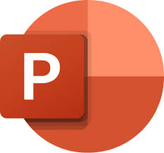

Microsof Word
Microsoft Word Functions
The main function of Microsoft Word is to help us process words, as explained above, MS Word is specifically for word processing. MS Word acts as a tool to help users to complete work related to words/text/documents/correspondence and so on.
Microsof Excel
Microsoft Excel Functions
main function Microsof Excel is for creating reports, calculating, analyzing and presenting data.
PowerPoint

PowerPoint Functions
main functions of PowerPoint include:
Slide Creation: PowerPoint allows users to create presentation slides easily. This includes adding text, images, graphs, tables, and various other visual elements.